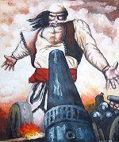
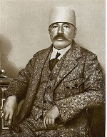
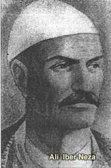

Peronalitete te shquara
Mic Sokoli

Mic Sokoli (1839 - 20 prill 1881) ishte një figurë nacionaliste shqiptare dhe luftëtar gueril nga Malësia e Gjakovës. Në vitet e Lidhjes së Prizrenit ka qenë udhëheqës i njohur gueril dhe ka marrë pjesë në luftimet e Gjakovës kundër Mehmet Ali Pashës. Luftoi në Betejën e Nokshiqit (afër Grudës) kundër malazezëve. Ai mbahet mend nga shqiptarët për një akt heroizmi në prill të vitit 1881, në të cilin u flijua duke shtypur trupin e tij në grykën e një topi osmanr pavarësinë e Shqipërisë, më vonë duke luftuar për Kosovën dhe inkorporimin në të pas Traktatit të Londrës në 1913. Pas vdekjes iu dha titulli Hero i Popullit Shqiptar.
Bajram Curri

Bajram Curri (Krushë e Madhe, 16 janar 1862 – Dragobi, 29 mars 1925) ka qenë ushtarak i Perandorisë Osmane, politikan dhe aktivist shqiptar i cili luftoi për pavarësinë e Shqipërisë, më vonë duke luftuar për Kosovën dhe inkorporimin në të pas Traktatit të Londrës në 1913. Pas vdekjes iu dha titulli Hero i Popullit Shqiptar.Në vitin 1918 u zgjodh anëtar i Komitetit "Mbrojtja Kombëtare e Kosovës" dhe u bë një nga veprimtarët e saj kryesorë.
Në Kongresin e Lushnjës u zgjodh anëtar i Këshillit Kombëtar, i cili e caktoi ministër pa portofol të qeverisë dhe komandant të përgjithshëm te forcave të armatosura.
Udhëhoqi veprimet ushtarake për shtypjen e lëvizjes esadiste në Shqipërinë e Mesme dhe gjithashtu bashkëpunoi me Zogun kundër lëvizjes separatiste të Republikës së Mirditës.
Fatmira Brecani
Fatmira Breçani është këngëtare e njohur. Eshte mbese Puke nga ana e nenes dhe bije Tropoje nga ana e babait. Kendon qe nga vitet e '70 dhe qe atehere jo vetem ka lancuar por edhe ka edituar shume kenge qe konsiderohen pasuri culturore e vendit. Fatmira eshte shquar gjithmone per zerin e saj te vecante dhe e ka ngritur ne nje nivel tjeter pritshmerite per kengen patriotike dhe popullore. Si nxenese e Fatime Sokolit, thuhet qe ajo e ka trashegim kengen Tropojane nga mesuesja e saj, ish-kengetare e fameshme ne te gjitha trojet shqipetare dhe qe eshte nderuar me titullin "Artiste e Popullit".
Sali Berisha

Sali Berisha (15 tetor 1944, Viçidol) është një kardiolog dhe politikan shqiptar, që shërbeu si presidenti i dytë i Shqipërisë në vitet 1992–1997 dhe president i parë i zgjedhur nga parlamenti i dalë nga zgjedhjet e lira demokratike pas rënies së regjimit komunist. Berisha ka qenë kryeministër i Shqipërisë nga 2005 deri më 2013. Ka qenë kryetar i Partisë Demokratike tri herë, në periudhën 1991–1992,1997-2013 dhe nga 2020 deri me sot
Ali Iber Neza

Ali Ibër Neza lindi në vitin 1835 në një kullë në Buçaj të fshatit Shipshan. Ai ishte ndër luftëtarët e shquar të rrethit në mbrojtje të territoreve shqiptare, ku që në moshën 20 vjeçe luftoi për kombin. Ai ishte delegat në moshën 43 vjeçare në Lidhjen Shqiptare të Prizrenit, ku luajti një rol të rëndësishëm në këtë kuvend kombëtar. Mori pjesë në luftra të shumta si ajo e Plavës, Gucisë, Moraçës etj. Në beteja të shumta, si ajo e Plavës dhe Gucisë që u zhvillua në muajt nëntor – dhjetor të vitit 1879, Ali Ibra ishte komandant i luftëtarëve tropojanë në luftë me malazezët. Ali Ibër Neza vdiq në vitin 1900 në fshatin Osek, në afërsi të Gjakovës.